Educator Growth & Evaluation: User Manual
Part of the Leadership Hub. For how this tool sits beside the rest of the suite, see For school leaders in the AlloFlow teacher guide. That chapter is the suite overview; this is the operating manual for one tool.
Where to start
Evaluators and principals: read sections 1 through 7 and section 12 to run and protect a cycle; add section 19 if you will use the principal-managed Drive helper.
Educators being evaluated: section 8 is written for you, and section 10 shows the summary you will receive.
District IT and administrators: section 9 is the deployment, and sections 11 and 12 cover privacy, data location, and backups.
1. Choosing Your Record Path
The workspace offers three deliberately different paths. The difference is where records live, who can see them, and who is responsible for setup.
| Private on-device | Principal Drive helper | District portal | |
|---|---|---|---|
| Who it is for | One evaluator drafting, simulating, and exporting on one device. | One principal who needs a small Drive handoff without a district-wide repository. | A district that wants authenticated, shared, two-way records. |
| Setup needed | None. | The principal copies three files into their own private Apps Script project, with district approval. | A district administrator deploys and configures the repository, membership, and assignments. |
| Where working data lives | In this browser profile on this device. A deliberate export creates a separate file wherever you save or send it. | Exported HTML packets in the principal's district Drive, plus the principal's local source workspace until it is handed off. | The district deployment account's repository and released-summary folders inside its Google Workspace tenant. |
| Educator access | No authentication. Real local records expose a read-only Educator preview. Only the explicitly fictional sample makes perspective changes interactive for rehearsal. | A reviewed viewer/commenter permission to one exported packet; it may expire or be revoked. | Each educator signs in and sees only their assigned record. |
| Controls | Visible save state, staged import review, automatic pre-import backup, manual exports, read-only preview for real records, an interactive coach limited to fictional data, and a reviewed backup-before-clean transition into real work. | Validated one-educator packet, verified-account domain boundary, immutable final review, live permission re-read, optional expiration, and proof-based revoke. | Managed identity, roles, assignments, mutation validation, server audit, two-party workflow, reviewed administrator changes, private audited exports, and archive rehearsal. |
| Official record | No. | No; the Drive folder needs a deliberate records handoff. | The district still decides which authorized personnel system is official. |
2. Quick Start
Three ways in, all the same tool. Inside AlloFlow, open Educator Tools → Leadership Hub → Educator Evaluation — that is the route the Leadership Hub documents and the one to teach colleagues. It is also still reachable from AlloFlow's Project Settings with Open Educator Evaluation. Or go straight to alloflow-cdn.pages.dev/educator-evaluation in any modern browser, which is the link to bookmark or hand to a colleague. Once the tool is open, Manual in its header returns you to this page from any tab.
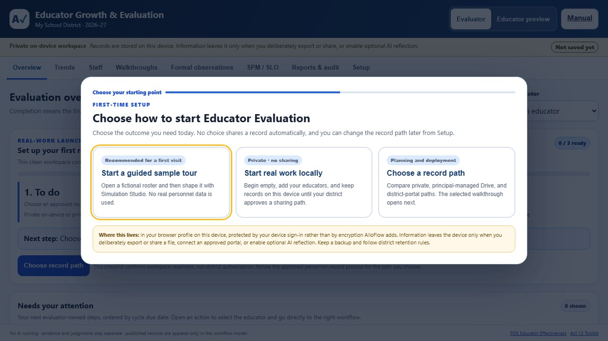
- Choose a starting point. Start a guided sample tour opens a fictional roster and walks through Overview, Staff, Walkthroughs, Formal, Audit, and Setup; Start real work locally preloads nothing and shares nothing; Choose a record path opens the neutral three-path setup center. Only the path you select expands.
- Set up the workspace. On the Setup tab, enter your organization, building, academic year, and evaluator name, then choose your evaluation framework (section 6).
- Add educators. On Staff, choose + Add educator, enter a name and unique staff code, then save. The form is a draft: Cancel creates no record or audit event.
- Start observing. Log walkthroughs as you do them, and assign formal observations when the cycle calls for them. Trends build themselves.
In the private path, edits are saved to this browser profile after a short delay. Watch the persistent Saving, Saved on this device, or Changes are not saved status. A blocked, full, or unavailable browser store is reported instead of being treated as success; download an emergency backup before closing. Exports, Drive sharing, the district portal, and optional AI reflection are deliberate transmissions described in section 11.
Rehearse one complete fictional evaluation
Before entering a real name or record, use the built-in rehearsal to experience every evaluator-owned and educator-owned step from assignment through final release.
- Enter simulated data. On first launch choose Start a guided sample tour. Finish the six-screen tour or choose Exit tour. Confirm that the top banner says Simulated data and the role control says Fictional educator, not Educator preview.
- Open the stable practice cycle. On Overview, find Practice one complete fictional evaluation and choose Start rehearsal with Teacher 08. The card tracks formal steps completed, fictional final release, and the next owner.
- Assign and follow the owner prompts. Choose + Assign formal observation. The Full-cycle rehearsal coach then names the next owner and offers Continue as Fictional educator or Continue as Evaluator when a perspective change is required.
- Complete the formal cycle in order. Submit fictional prework; record the pre-conference; start the observation; enter factual, de-identified evidence; tag a component; complete the privacy check; and publish. Then submit the fictional educator reflection, record the post-conference, enter a human-selected rating and rationale for every domain, sign, acknowledge receipt as the fictional educator, and finalize as evaluator.
- Complete the annual release. Choose Continue to annual rating preview, enter the four human domain ratings and any required local-measure inputs, read the confirmation, and choose Record final release. In simulated data this records a fictional release only; it does not create or update a district personnel record.
- Verify the chain. Back on Overview, the card should read 10 / 10, Recorded, and Rehearsal complete. Choose Review completed fictional cycle and confirm the timeline includes assignment, evidence publication, evaluator signature, educator acknowledgment, finalization, and release.
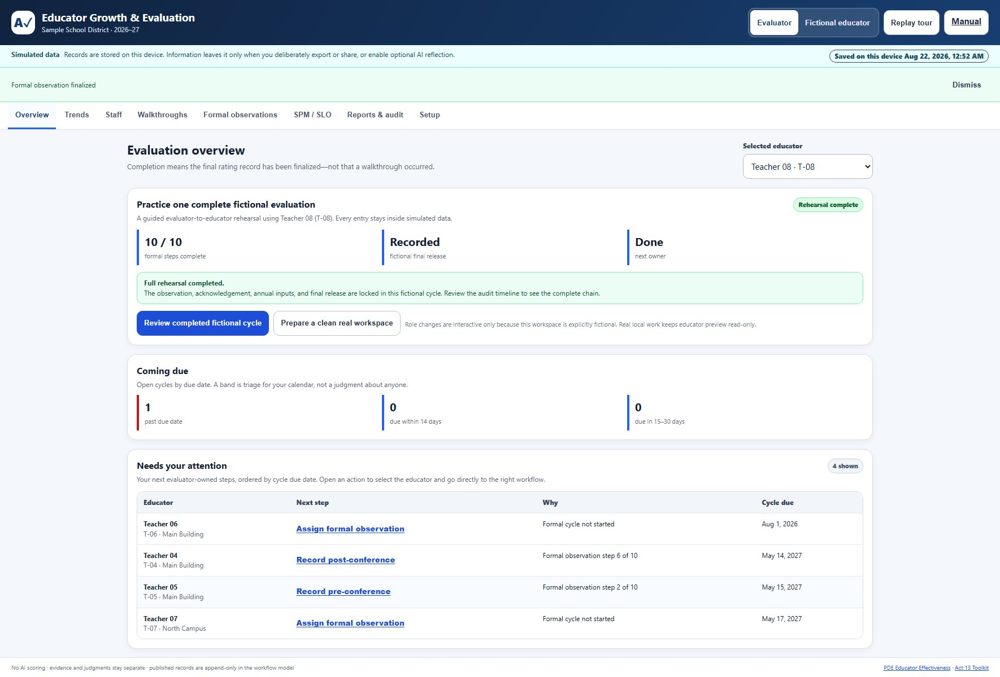
Move safely from practice to real work
The practice workspace is a rehearsal environment, not a template for personnel records. When training is complete, use the built-in transition so the rehearsal remains recoverable while real work begins in a separate empty workspace.
- Open the transition. On the completed rehearsal card, choose Prepare a clean real workspace. The tool opens Reports & audit and moves to the practice-to-real controls.
- Review what will happen. Choose Review clean-workspace transition. Check the displayed fictional educator count, fictional workflow-record count, current planning path, and the promise that a backup downloads before the reset.
- Acknowledge the boundary. Check the statement confirming that the clean workspace starts empty. Until it is checked, Download rehearsal backup and start clean stays disabled.
- Preserve and separate. Choose Download rehearsal backup and start clean. The browser downloads a dated JSON recovery copy, then starts a blank real-work workspace. The sample records are never copied, converted, or mixed into the new workspace.
- Complete first-cycle readiness. On Overview, follow Set up your first real cycle. The checklist routes you through Choose an approved record path, Confirm workspace details, and Add the first educator. Its status changes from 0 / 3 ready as each local requirement is completed.
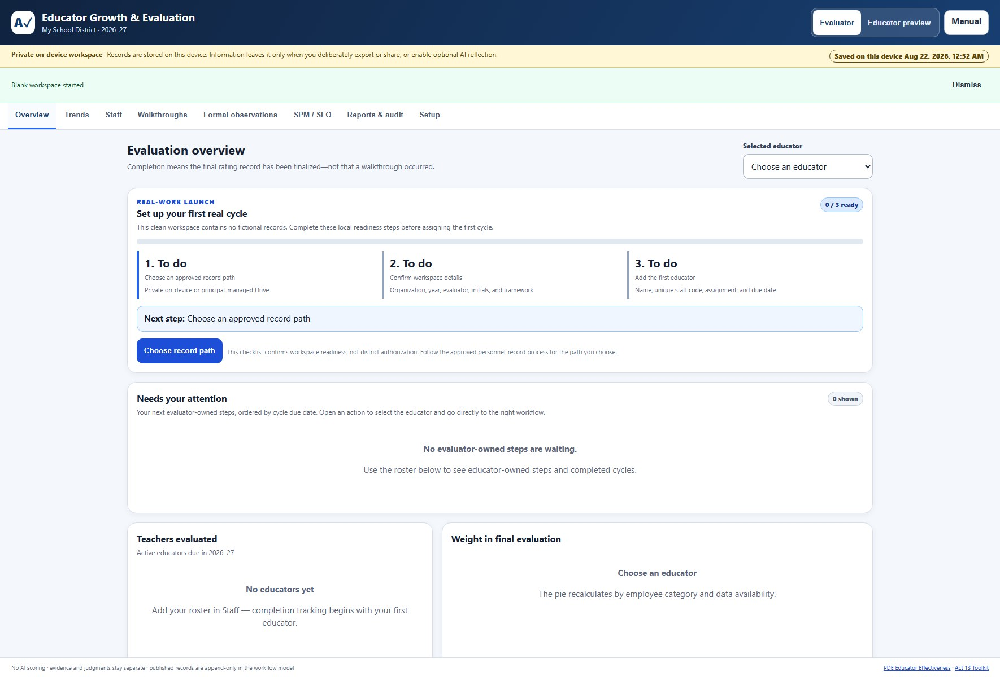
Changing the fictional scenario
In a simulated workspace, open Setup → Simulation Studio. It is intentionally absent from real workspaces. The language interpreter is a local rules parser, not an AI service: no request or record leaves the browser.
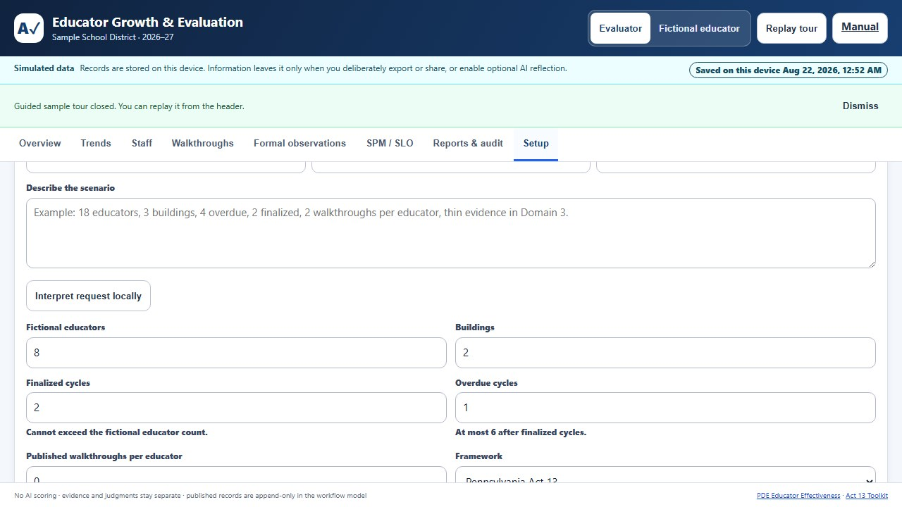
| Parameter | Allowed value | What happens at the boundary |
|---|---|---|
| Fictional educators | 1 to 60 | Values outside the range are normalized and shown before preview. |
| Buildings | 1 to 8 | The selected number is distributed across fictional profiles. |
| Finalized cycles | 0 to educator count | Cannot exceed the roster. |
| Overdue cycles | 0 to remaining non-finalized educators | Finalized and overdue counts cannot overlap. |
| Published walkthroughs per educator | 0 to 8 | The preview reports the resulting total. |
| Framework | Pennsylvania Act 13, Maine PEPG, or Portland PEPG | Use the profile menu for exact selection; recognized framework language can also set it. |
| Intentionally thin evidence | None or Domain 1 to 4 | Creates a safe fictional evidence-gap exercise. |
- Natural language only: type a concrete request such as 18 educators, 3 buildings, 4 overdue, 2 finalized, 2 walkthroughs per educator, Portland framework, thin evidence in Domain 3, then choose Interpret request locally. The result names recognized settings, corrections, and clauses it ignored. Reword only the ignored part; do not assume it was applied.
- Manual only: start with Small-school tour, Busy midyear, or Evidence-gap review, then edit the number fields and menus. A normalization warning shows every requested-to-applied correction.
- Combined: interpret a sentence first, then fine-tune any field manually. Manual values visible at preview time are authoritative.
Choose Preview changes and inspect the educator, building, finalized, overdue, and walkthrough totals. Nothing changes yet. Apply this simulated scenario replaces only the fictional workspace. Undo last simulation remains available while the Simulation Studio is mounted; export a sample JSON if you need a durable comparison across reloads.
3. A Tour of the Workspace
Evaluators see eight tabs. The Overview is the daily home base: what is coming due, which human step needs attention next, how far the roster has progressed, and how the selected educator's final evaluation is composed.
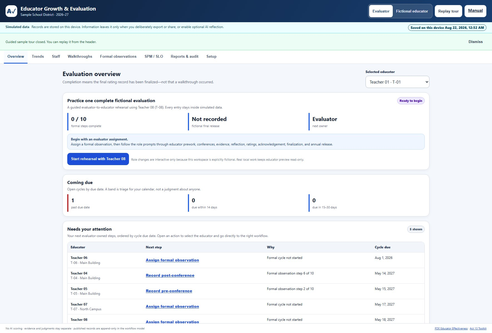
- Overview: cycle progress, what is coming due, a Needs your attention queue, and the weighting for the selected educator. The queue includes evaluator-owned work only and orders it by cycle due date. Choose an action to select that educator and open Formal observations, Walkthroughs, SPM / SLO, or final evaluation as appropriate. The roster's Next action column also names educator-owned waiting states, so waiting for prework or acknowledgment is not presented as unfinished evaluator work.
- Trends: growth over time and de-identified peer context (section 7).
- Staff: the roster, assignments, and cycle status.
- Walkthroughs: short, frequent, low-stakes visit notes (section 4).
- Formal observations: the full ten-step cycle (section 5).
- SPM / SLO: student performance measures and student learning objectives, where your framework uses them.
- Reports & audit: the audit timeline, exports, and handoff (section 12).
- Setup: workspace settings, framework choice, official references, the portal connection guide, and the Share by QR card.
A Manual link sits in the header on every tab, so this document is always one click away from wherever you are working.
A footer runs along the bottom of every screen as a standing reminder of the design commitments: no AI scoring, evidence and judgments stay separate, and published records are append-only.
What the tool deliberately does not do
- It does not score anyone. Every rating is entered by a person, and the software performs arithmetic only.
- It does not reproduce licensed rubric text. Component names organize evidence; the performance-level descriptors stay with your licensed materials.
- It does not rank educators against each other. Cohort context is de-identified and suppressed for small groups.
- It does not replace your district's personnel system, and it does not decide anyone's employment.
4. Walkthroughs: Evidence and Interpretation
A walkthrough is a middle-of-lesson visit that captures factual evidence. It does not replace a comprehensive observation and it never auto-scores a rubric.
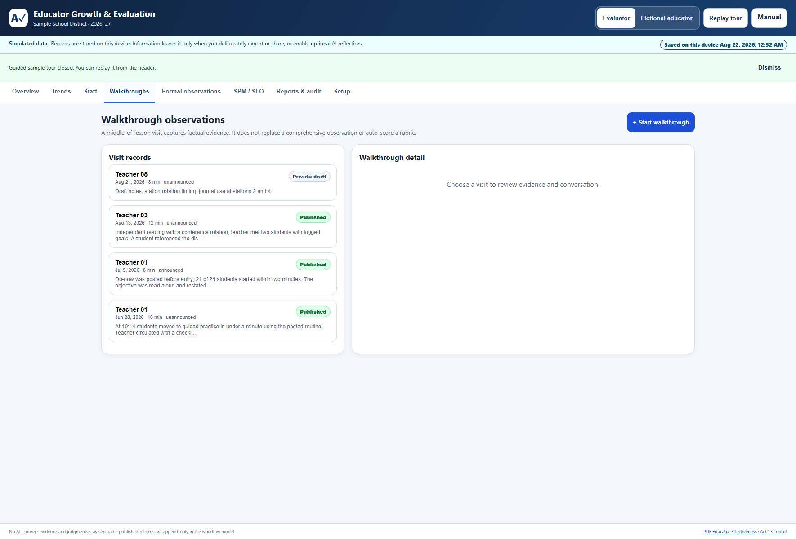
- Drafts are private. A visit marked Private draft is yours alone. Nothing reaches the educator's record until you publish it.
- Publishing freezes the snapshot. A published walkthrough becomes a locked record. Later thoughts are appended as comments and cannot alter the original evidence.
- Two separate fields, on purpose. Directly witnessed evidence is what you saw and heard. Interpretation and feedback is what you make of it. Keeping them apart is what makes a walkthrough defensible and useful to the educator.
- Interpretations pay off later. They are mined into the released summary, so a strength you noticed in October is still visible in June.
- Component tags (2B, 3D, and so on) organize evidence by framework component without reproducing licensed rubric text.
5. The Formal Observation Cycle
Formal observations walk a ten-step tracker in order, and the tool will not let steps be skipped silently. The tracker across the top of the record always shows where you are.
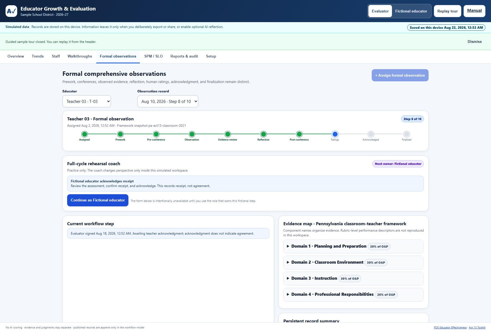
- Assigned. The observation is created for an educator and stamped with the framework snapshot in force.
- Prework. The educator submits pre-observation reflection.
- Pre-conference. You meet and record it.
- Observation. You observe and collect evidence.
- Evidence review. Evidence is published so the educator can see exactly what was recorded.
- Reflection. The educator responds to what was observed.
- Post-conference. You discuss it together.
- Ratings. You enter human ratings with a written rationale for each domain. Nothing is scored by AI at any point.
- Acknowledged. You sign, and the educator acknowledges. Acknowledgment records that they saw the record, not that they agree with it.
- Finalized. The record locks. Later context appears as appended comments.
Alongside the tracker, the evidence map organizes evidence by domain and shows each domain's weight within Observation and Practice. Component names appear, but rubric-level performance descriptors are not reproduced, because that text is licensed.
In simulated data, the Full-cycle rehearsal coach can change between evaluator and Fictional educator so one principal can practice both sides. That control does not appear as an editable educator role for real local records. Real two-person work requires an educator response packet or authenticated portal account.
Returning to earlier records: when an educator has more than one formal observation, use the Observation record selector beside the educator selector. Records are newest first and show their observation date plus Finalized or the current step. Selecting a finalized record opens its locked history; it does not reopen the workflow.
Artifact boundary: the prework field accepts text and district-authorized, access-controlled references only. None of the three record paths uploads, versions, scans, or retains attachment files. Keep the actual artifact in the district-approved repository, manage its permissions and retention there, and do not paste student-identifying information into the reference.
The educator statement
At any point before finalization, the educator can attach a statement in their own words. It is theirs: no evaluator can edit it, it appears verbatim under "In your own words," and it leads the released summary, ahead of any ratings. This mirrors the contractual right to attach a memorandum to a personnel record. Once the record is finalized, the statement is frozen with it.
6. Framework Profiles
Choose the profile on the Setup tab. Every record permanently remembers which framework and weights it was scored under, so changing profiles mid-year never rewrites old scores.

Pennsylvania Act 13 (Danielson 2021)
Assignment-aware composition: 70/10/10/10 for classroom teachers, 80 percent Observation and Practice where Building Level Data is unavailable, and 100 percent Observation and Practice for temporary classroom teachers.
Portland, Maine (PEPG guidebook)
Uses the published guidebook's four performance levels (Unsatisfactory, Novice/Needs Improvement, Proficient, Excellent), all 22 Danielson components, a categorical decision matrix rather than a numeric average for the summative practice rating, and an evidence expectation of at least nine pieces. Confirm the details against your current district guidebook, because the district plan governs.
How the Portland matrix reaches a summative practice rating
Portland's summative practice rating is categorical, not an average. The tool checks four rules in order and stops at the first one that fits:
| Result | When |
|---|---|
| Unsatisfactory | Any domain is rated Unsatisfactory. |
| Excellent | Two or more domains are Excellent and none is below Proficient. |
| Novice/Needs Improvement | Three or more domains are at Novice/Needs Improvement. |
| Proficient | Everything else: no more than two domains below Proficient, and none Unsatisfactory. |
Because the rules run in order, a single low domain outranks several high ones. That is the intended behaviour of a matrix and the main way it differs from an average:
| Domain ratings | Result | Why |
|---|---|---|
| 0, 3, 3, 3 | Unsatisfactory | One Unsatisfactory domain decides it, even beside three Excellent domains. An average would have read 2.25. |
| 3, 3, 2, 2 | Excellent | Two Excellent domains and nothing below Proficient. |
| 3, 3, 1, 2 | Proficient | Two Excellent domains, but one sits below Proficient, so the Excellent rule does not apply. |
| 1, 1, 1, 2 | Novice/Needs Improvement | Three domains at Novice/Needs Improvement. |
| 2, 2, 2, 2 | Proficient | The ordinary case. |
No summative practice rating is produced until all four domains are rated. A partially rated record stays blank rather than guessing.
Maine PEPG (district plan governs)
Maine systems are local. Your district plan, built with a steering committee that has a teacher majority and revised by consensus, defines the rubric, rating levels, category weights, and process. Enter your plan's Professional Practice and Student Learning and Growth split. Since the 2019 amendments, student learning and growth measures are a district choice rather than a state mandate. This workspace mirrors your plan; it never substitutes for it.
7. Trends and Why Old Scores Never Change
The Trends tab shows finalized ratings and workflow activity over time. Evidence text, comments, and rationales are never aggregated into a number.
![Teacher trends and cohort context tab. An amber notice reads that this is a privacy-aware aggregate and not FERPA certification, that cohort values appear only when at least ten eligible peers contribute, that small groups are suppressed, and that results are descriptive and must not be the sole basis for personnel decisions. Below are trend filters for educator, metric, and a date range, then a longitudinal snapshot for Teacher 03 counting published walkthroughs, finalized formal observations, and released cycle snapshots.](educator-evaluation-manual-assets/05-trends.jpg)
- Small cohorts are suppressed. Peer context appears only when at least ten eligible peers contribute, so no one can be identified by subtraction in a small building.
- Comparisons are descriptive. The screen says plainly that these results must not be the sole basis for personnel decisions.
- Prior cycles are reported separately from the current year, and released cycle snapshots are immutable.
The framework snapshot
Every record is stamped with the framework and weights that were in force when it was created. If your district changes frameworks, or you switch profiles to compare, the tool recalculates nothing retroactively: a record scored under Pennsylvania Act 13 keeps its Act 13 math forever, and a Maine record keeps its Maine math. This is why a trend line stays trustworthy across a policy change, and it is also why two records in the same list can be scored differently on purpose.
8. For Educators Being Evaluated
There are two deliberately different educator perspectives. In a private on-device workspace, Educator preview lets the evaluator inspect visibility but cannot change a real record. In the district portal, an educator signing in with their managed district account gets editable educator-owned steps and their own set of tabs, scoped to them alone. Colleagues' records are never visible.
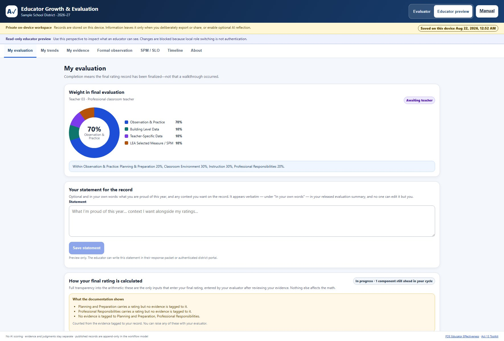
- My evaluation: how the final evaluation is weighted, current status, and the statement card.
- My trends: your own growth over time.
- My evidence: published walkthroughs and evidence, where you can add comments to the conversation.
- Formal observation: where you are in the ten-step cycle, with prework and reflection.
- SPM / SLO: your student performance measures and learning objectives.
- Timeline: the dated record of what happened and when.
- About: the framework in use and the official references behind it.
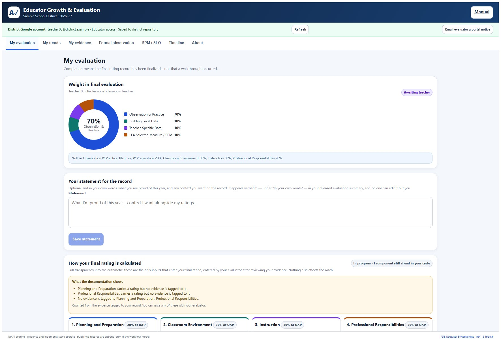
Three things worth knowing as an educator. You see the same evidence your evaluator sees, as soon as it is published. Acknowledging a record means you have seen it, not that you agree with it. And if you disagree, or if there is context the ratings do not capture, write a statement: it leads the document, word for word, and no one can edit it.
You can download your own workflow summary and growth snapshot at any time. The teacher view cannot export the whole workspace or see organization-wide audit events.
9. Setting Up the District Portal
Get IT permission first. The portal must live in a district-owned Google account, never a personal one, and district IT and leadership should approve it like any system that touches personnel records, including LEA authorization, a privacy and security review, and approval of any rating forms.
The portal is a separate deployment from the AlloFlow Class Mailbox. The mailbox is deliberately open to anyone with the link, because homework is low-stakes. The evaluation portal is the opposite: district-domain accounts only, and it fails closed without one.
- Create a district-owned standalone Apps Script project. Add all four required files:
Code.gs,Index.html,Portal.html, andappsscript.json. In Project Settings, first enable display of the manifest. - Review scopes and ownership with district IT. The project uses the deployment owner's Drive for the private repository. Record who assumes ownership if that account changes.
- Add a temporary no-argument setup wrapper. Apps Script's Run button cannot supply the object argument directly. Paste the template below at the end of
Code.gs, replace every example value, runrunDistrictSetupOnceas the same account named bybootstrapAdmin, save the returned repository IDs, then delete the wrapper and save again. - Deploy a Web app. Choose Execute as: Me and Who has access: users in your domain; never choose Anyone. Copy the resulting
/macros/s/…/execURL. - Verify before real records. Run
verifyDeploymentIdentity(), then test the URL as an administrator, an assigned evaluator, an assigned educator, an unlisted same-domain account, and a personal Gmail account. The last two must receive Access unavailable; each permitted account must see only its authorized scope. - Register the reviewed URL. Re-run the setup wrapper with the exact
webAppUrlincluded, remove the wrapper again, and give staff only that reviewed/execlink. Google sign-in and server assignments, not possession of the link, decide access.
function runDistrictSetupOnce() {
return setupEvaluationRepository({
allowedDomain: 'example.k12.pa.us',
bootstrapAdmin: 'principal@example.k12.pa.us',
adminDisplayName: 'Principal',
organization: 'Example School District',
building: 'Example School',
academicYear: '2026-27',
webAppUrl: '', // add the reviewed /exec URL on the second run
teachers: [{
id: 'teacher-001', code: 'T-001', name: 'Educator Name',
building: 'Example School', assignment: 'Grade 6',
employeeType: 'professional', buildingData: true,
teacherSpecificData: true, evaluator: 'Evaluator'
}],
members: [
{ email: 'principal@example.k12.pa.us', displayName: 'Principal', role: 'admin', active: true },
{ email: 'evaluator@example.k12.pa.us', displayName: 'Evaluator', role: 'evaluator', active: true },
{ email: 'teacher@example.k12.pa.us', displayName: 'Educator', role: 'teacher', teacherId: 'teacher-001', active: true }
],
assignments: [
{ teacherId: 'teacher-001', evaluatorEmail: 'evaluator@example.k12.pa.us', active: true }
]
});
}Current operational boundary: treat this package as a district-reviewed pilot until the district has documented and tested backup/restore, the archive-first annual rollover below, retention and legal-hold handling, authorized deletion, deployment-owner transfer, and official-record handoff. The portal makes rollover safer; it does not make those lifecycle responsibilities disappear.
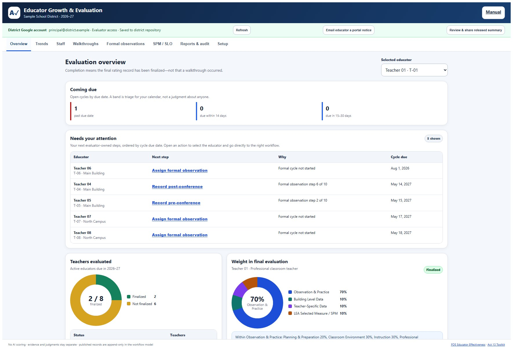
After connecting, the Setup health panel confirms the deployment is configured correctly, checking the domain lock, repository files, assignments, unresolved release/rollover recovery, and whether the effective deployment owner still matches the bootstrap administrator before anyone relies on it. It also re-hashes the audit log and reports whether any entry has been edited, deleted, or reordered since it was written, so an administrator can confirm the record is intact without opening the script editor. An owner mismatch is a warning, not an ownership-transfer tool: district IT must transfer and test Apps Script and Drive custody through approved Google Workspace procedures.
Routine district administration without the script editor
An authorized administrator now has a District operations center inside Setup. It is for recurring work after the one-time repository deployment. Each sensitive operation follows the same pattern: enter the request, review a server-produced summary that changes nothing, check the explicit acknowledgment, then confirm. Reviews are tied to the signed-in administrator and current repository state, expire after ten minutes, and cannot be reused.
District workspace configuration
- Open Setup → Workspace setup while signed in with administrator access. Evaluators and educators see the current values as read-only.
- Edit the organization, default building, academic year, evaluator display name, approved built-in framework profile, optional Maine Professional Practice weight, or AI reflection policy. These edits are only a browser draft at this point.
- Select Review district configuration. The server returns a current-versus-proposed table plus the number of active educators, open cycles, and records whose weights or finalization history are already protected.
- Compare every row with the district-approved plan. When a framework or weight changes, the review explicitly states that eligible future work can use the new policy while existing frozen snapshots are not recalculated.
- Check the impact acknowledgment and select Confirm reviewed configuration. The server rejects direct configuration changes made through ordinary autosave, stale reviews, expired reviews, reviews created by another administrator, and reused tokens. A successful confirmation creates a server audit event.
Custom rubric boundary: the district portal currently persists only its approved built-in framework profiles. Custom rubric JSON import remains available in a private on-device workspace, but it is intentionally unavailable in the portal until the server can validate, version, license-review, and preserve the exact rubric for every affected record. The portal administrator can download the current rubric reference without changing policy.
Accounts and evaluator assignments
- Create the educator profile in Staff first. The profile ID is an opaque application ID, not an email or employee number.
- Open Setup → District operations center → Accounts and evaluator assignments. Wait for the current managed member table to load.
- For an educator account, enter the managed-domain email, display name, choose Educator, and link the correct educator record. For an evaluator or administrator, choose that role; no educator link is used.
- Select Review member change. Compare the normalized managed email, role, record link, and active status. Check the legitimate-educational-interest acknowledgment, then choose Confirm directory change.
- To authorize an evaluator, choose the educator and an active evaluator/administrator member, set the assignment active or inactive, then use Review assignment change and the same confirmation step.
The portal blocks an educator account that points to a missing educator, an assignment to a missing or inactive evaluator, removal of the bootstrap administrator, or a change that would leave no active administrator. If any other member or assignment changes during review, reload and review again.
Annual cycle due-date schedule
- Open Annual cycle due-date schedule, choose the date, and optionally enter an exact building name.
- Choose Open cycles without a due date for the safest fill-in operation, or All open cycles only when replacing current dates is intended. Inactive and finalized cycles are never changed.
- Select Review schedule impact. Read the affected count, finalized count skipped, and sample names. A zero-result review cannot be confirmed.
- Confirm the scope and apply. Then choose Reload scheduled records and spot-check the Staff list.
Audited private exports and official-record handoff
Private export is not official-record filing. The portal creates the requested file privately in the deployment owner's Authorized exports folder. It does not email, share, move, or declare that file to be the official personnel record.
- Choose Roster and cycle status CSV, One educator's complete portal record, or Complete repository workspace backup.
- Write a specific authorized purpose, such as the approved annual HR handoff under a named district procedure. Avoid generic text such as “backup.”
- Select Review private export. Verify the scope, named educator when applicable, current counts, purpose, and private destination.
- Confirm district authorization, destination, retention, legal hold, and handoff. Select Create verified private export. The server re-reads and hashes the stored bytes before returning a Drive link and writes the event to the canonical audit.
- Open the Drive link, preserve the displayed SHA-256 under district procedure, complete the approved handoff, and document custody. Delete or retain the private working export only according to district policy.
Archive inventory and non-destructive restore rehearsal
- Select Load and verify annual archives. The portal lists only files in this repository's private Annual archives folder and recalculates each embedded workspace hash.
- For a verified archive, choose Review rehearsal. Compare archived year/revision and record counts with the active year/revision.
- Acknowledge that the action creates a separate candidate and does not perform a live restore. Choose Create private restore candidate.
- Open the candidate in the private Restore rehearsals folder and have district IT test its contents through the approved recovery procedure. The live workspace remains unchanged; the portal intentionally offers no one-click production restore.
Annual rollover: archive first, then start the new year
Administrator-only and high impact. Complete this in a test repository first. The workflow creates and verifies a private archive before changing the active workspace, but it does not select your retention period, execute a legal hold, transfer ownership, or file the record in your official HR/records system.
- Finish district preflight. In the portal, open Setup, run Setup health, and resolve any repository, workspace-integrity, audit-chain, owner-continuity, released-summary recovery, or rollover-recovery warning. Confirm that district backup/restore, retention, legal hold, official-record handoff, and owner succession are documented and tested.
- Open Annual rollover & continuity. Enter the immediately following academic year in
YYYY-YYform. For example, an active2026-27workspace can advance only to2027-28. Choose Review annual rollover. Review changes nothing. - Read the live impact review. It lists active educators, finalized cycles, open cycles, current walkthroughs, formal observations, SPMs, comments, prior cycle snapshots, and released-document references. The review expires after ten minutes and becomes stale after any intervening workspace save.
- Make an explicit custody decision. Check the district-custody acknowledgment only after verifying backup/restore, retention, legal hold, official-record handoff, and deployment-owner responsibility. If open cycles exist, separately acknowledge that they will be preserved in the archive but will not carry into the new active year.
- Create the archive and start the year. Choose Create archive & start …. The server creates a private JSON file in the repository's Annual archives folder, re-reads it, checks the embedded workspace hash and exact stored bytes, and only then writes the clean active year.
- Verify the result. Open the returned verified private archive link, record its Drive location and archive ID under district procedure, confirm the file is private, then choose Reload active year. Run Setup health again.
What is retained and what is reset
| Retained in the new active workspace | Reset for the new active year | Preserved outside the active year |
|---|---|---|
Educator roster and profile identifiers, active/inactive status, member accounts, evaluator assignments, framework configuration, immutable prior cycleSnapshots, and audit history. | Due dates, cycle status, activity/finalization/lock timestamps, current ratings, weights and final score, educator statement, released-document pointer, walkthroughs, formal observations, SPMs, and comments. | The complete pre-rollover workspace in the verified private JSON archive. Existing released Google Docs remain where they are and are never deleted or unshared by rollover. |
Resetting the active pointer to a released summary does not delete that Drive document. The old pointer, permissions, and document context remain in the archive, and the file remains subject to district retention and legal-hold rules. The archive is intentionally private to the deployment owner; districts that require independent custody must copy or export it through an approved, auditable handoff.
If rollover is interrupted
If the archive is verified but the active commit cannot be confirmed, the portal reports Annual rollover recovery required and blocks another review. Do not keep clicking rollover. Choose Recheck interrupted rollover. The server reopens and verifies the recorded archive, then clears the block only if it can prove one of two states: the new-year commit is present, or the exact old revision and old academic year are unchanged. In the second case the verified archive is kept and a fresh review can be started. If the workspace is in any mixed state, the block remains and district IT must compare the active workspace.json, its metadata row, pending journal, and the exact annual archive before proceeding. Never delete a released document or archive merely to clear a warning.
10. The Released Summary: How It Arrives and What It Says
In the district portal, releasing a finalized evaluation is a review, then confirm workflow. Opening the review changes nothing:
- Select the finalized educator and choose Review & share released summary. The server resolves the active educator member account; the browser does not supply or edit the recipient.
- Read the disclosure card. It names the educator, exact managed Drive account, finalization time, intended access, notification boundary, and whether the action will create, verify, or replace a document. The review token expires after ten minutes and becomes invalid if the record changes.
- Check the confirmation only after verifying the account, then choose Confirm and grant access. The summary is generated as a Google Doc in the private Released evaluations folder and that single file is shared view-only with the educator. The initiating evaluator is also given access when they are not the deployment owner, so Open current summary behaves as labeled.
- Choosing Review released-summary access later verifies or restores access to the same immutable document; it does not quietly create duplicates. A replacement is offered only when the recorded file is unavailable, and the old pointer is retained as superseded history.
- This Drive action does not send the separate content-free portal email. Use Email educator a portal notice deliberately if one is needed. Google can still surface Drive access in its own activity or notification interfaces, so the tool does not promise that Drive itself is silent.
- When the educator follows the portal summary link, a link-opened receipt is attempted. It records that the link was clicked, not that the document was read, understood, or actually received. If that write fails, the summary still opens and the portal now displays the receipt error instead of suppressing it.
Sharing is a deliberate evaluator action, never a silent background job. If Drive access succeeds but the repository commit cannot yet be confirmed, the portal says Release recovery required, disables another attempt, and tells an administrator to run Setup health. A failure before commit attempts to remove newly granted viewers and move the uncommitted file to trash; an unconfirmed cleanup also appears in Setup health. Do not retry until the recovery item has been inspected. District IT should still test recipient access, tenant-specific Drive activity, recovery, retention, and legal-hold procedures before production use. In the on-device workspace, use Export growth snapshot instead: it produces a formative, ratings-free file you can hand to an educator directly.
What the document actually says
Below is a real summary produced by the tool, abridged, using fictional names. Notice the order: the educator's own words come first, strengths come before growth areas, and the arithmetic is explained rather than asserted.
Educator Effectiveness Summary — 2026-27
This document is a plain-language summary of your finalized evaluation. It is shared view-only with you. Your district decides which authorized personnel system is the official record; the portal holds the observations, timestamps, and revisions used to assemble this copy.
In your own words
This year I rebuilt my small-group reading block so every student conferences with me at least twice a month. Attendance in my first period was uneven through the winter, and I want that context on the record alongside my ratings.
Your strengths
Planning and Preparation — rated Distinguished (how the lesson and its goals were designed)
Plans name the standard, the misconception to watch for, and the check for understanding.
Classroom Environment — rated Distinguished (the respect, routines, and culture students experience)
Transitions are routine and student-run; the room lost under a minute across three transitions.
[ two further domains follow, each with its evaluator's written rationale ]
Walkthrough observation (2026-08-09)
The discussion-norms anchor chart is doing real work; students referenced it without prompting. Worth sharing at a team meeting.
Your overall rating, in plain language
Overall score: 2.69 out of 3, which is the "Distinguished" performance band. Bands are fixed statewide cut points: 2.50 and above is Distinguished, 1.50–2.49 Proficient, 0.50–1.49 Needs Improvement, below 0.50 Failing.
| Component | Weight | What it measures |
|---|---|---|
| Observation & Practice | 70% | Your observed practice across the four domains below. |
| Building Level Data | 10% | Your building's performance data for the year. |
| Teacher-Specific Data | 10% | The measures selected for your role and assignment. |
| LEA Selected Measure / SPM | 10% | The measures selected for your role and assignment. |
Your final score is the weighted average of these components — each score is multiplied by its weight and the results are added. No component is hidden and no other factor enters the calculation.
[ a domain-by-domain table follows, giving each rating in plain language ]
Growth focus
No component of your finalized evaluation was rated below Proficient.
Transparency and your rights
This summary was assembled only from the finalized records in the district portal: 1 finalized formal observation and your locked student performance measures. Every rating shown here was assigned by a person and carries that person's written rationale in the portal; the software performs arithmetic only.
- You can read every underlying record, timestamp, and revision in the portal at any time.
- You acknowledged the observation before finalization; acknowledgment records that you received it, not that you agree.
- You can add a written response through the portal dialogue, and it becomes part of the record.
- Finalized records are immutable — nothing in this summary can be edited after release without a new, visible record.
Questions about this evaluation go first to your evaluator or to Sample School District leadership. This copy is shared view-only to your district account; if any detail here disagrees with the portal, the portal record governs.
The wording adapts to your framework profile: a Maine or Portland workspace names that plan's rating levels instead of the statewide Pennsylvania bands.
11. Privacy, Records, and Boundaries
“Local” describes the normal working store, not every action a user can take. Use this data-flow table when reviewing the tool with privacy, labor, records, and IT staff.
| Action | Destination | Information involved | Trigger and choice |
|---|---|---|---|
| Private work and delayed save | This browser profile on this device | The complete local workspace | Automatic after an edit; visible save status reports success or failure. |
| Workspace, report, packet, or recovery export | The download location and any system through which you later store or send the file | The export's stated scope; workspace JSON is the broadest | User selects a Download/Export action. Review and store it only in an authorized location. |
| Principal Drive helper | The verified principal's district Drive and one reviewed recipient's Drive access | One validated educator packet | Principal completes a disclosure review, then explicitly confirms. Google Drive is asked to notify the recipient. |
| District portal | The district deployment owner's Google Workspace repository; released copies may be shared to an educator's Drive; annual archives remain private in the repository owner's Drive until an approved district handoff | Authorized workspace records, released summaries, and a complete pre-rollover workspace inside each verified annual archive | Managed sign-in plus server role/assignment checks; sharing and administrator-confirmed annual rollover are separate actions. |
| AI reflection | The AI provider configured in AlloFlow | The selected educator's evidence notes and ratings; the name field is omitted | Off by default. An evaluator enables it under Setup → Advanced workspace options and requests a second read. |
| QR code | No record destination; it encodes only a workspace or portal URL | A link, never the current workspace records | Visible only for the private path or a connected portal. |
- Names-limited is not anonymous. Omitting the educator's name does not de-identify narrative evidence, comments, class details, dates, or contextual statements. Review free text before every export or share.
- AlloFlow adds no encryption of its own. Local records inherit protection from the device account and browser profile. Confirm device encryption and management with IT.
- Retention and discoverability apply everywhere. Local browser records, downloads, Drive packets, portal repositories, and AI-provider processing must all fit district policy and any collective bargaining agreement.
- Artifact references are not attachments. The tool stores the reference text but does not upload, copy, scan, version, retain, or change access to the referenced file. The separate district repository remains responsible for file access, retention, legal hold, and deletion.
- Evaluations are personnel records. FERPA applies when evidence includes identifiable student education information; keep evidence focused on educator practice and remove unnecessary student identifiers.
- Role switching and Educator preview are not authentication. The local educator preview is read-only and helps an evaluator inspect visibility. Only a managed portal sign-in or a deliberately shared packet grants another person access.
- The district decides the official record. The tool and helper do not make that decision.
- No AI scoring. Ratings are entered by people. Optional AI reflection comments on documentation only and must remain advisory.
12. Backing Up and Moving Devices
The on-device workspace lives in your browser's storage. That is what keeps normal editing local, and it is also its main risk: clearing browser data can erase it, and it does not follow you to another computer. A persistent header status distinguishes Saving, Saved on this device, and Changes are not saved.
![Reports and audit tab headed Audit, reports, and handoff. The left column shows an audit timeline listing dated events including assigned, prework submitted, observed, evidence published, reflection submitted, and signed, each naming the actor and role. The right column holds an Export and transfer card with buttons for Export workspace JSON, Export status CSV, Workflow summary HTML, and Growth snapshot, an Import another device export section, and a warning that the district-authorized system remains the official summative rating record.](educator-evaluation-manual-assets/09-reports-audit.jpg)
- Export workspace JSON is your backup. Take one at the end of any working session you would not want to redo, and keep it in district-authorized storage.
- Import workspace or educator response stages a review instead of applying on file selection. A workspace review shows organization, year, educator and record counts, and export time. Replacement automatically downloads a pre-import checkpoint; Undo import remains until the next edit. Device-specific helper URLs and verification are removed.
- A response import lists the source packet, educator, response fields, stale records, and ignored fields before you apply it. The tool assigns receipt timestamps itself; timestamps edited into the file are not trusted.
- Export status CSV and Workflow summary HTML are for reporting and handoff rather than backup.
- Growth snapshot is the formative, ratings-free file you can share with an educator directly.
Exports can contain confidential personnel information. Store and transmit them only through district-authorized systems, never personal email or cloud storage.
If storage is corrupt: the app quarantines the raw value rather than silently replacing it with sample data. Download the damaged raw workspace for recovery, retry storage, or use the explicit two-confirmation fresh-start action. If storage is unavailable, continue only as a temporary session and export before closing. If a save fails, use Retry save and Download emergency backup.
The district portal changes the backup owner; it does not remove the concern. Its annual rollover creates and verifies a private point-in-time archive before resetting active cycles, but that archive still lives under the deployment owner's Drive custody. District IT must define and test independent repository backup/restore, archive handoff, retention, legal hold, authorized deletion, annual rollover acceptance, and deployment-owner transfer. Its hash chain can detect many edits to retained rows, but without an independent external anchor it should be described as tamper evidence, not proof that no tail or whole-log deletion occurred.
13. Using It on a Phone
Walkthroughs happen while you are standing in a doorway, so the workspace reflows to a single column on a phone. The tab strip scrolls sideways, cards stack, and buttons keep a large touch target.
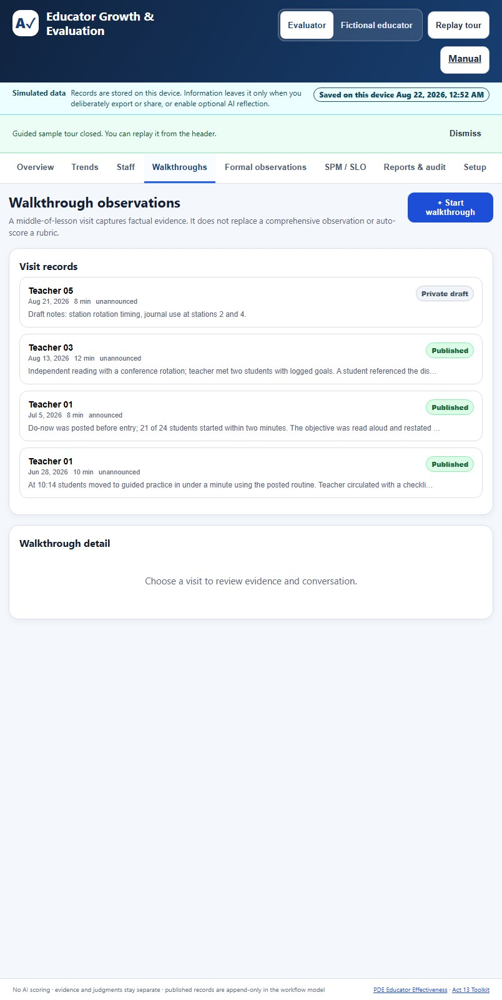
- Add to your home screen so the workspace opens in one tap, the same as any bookmarked web page.
- The workspace is per device. A walkthrough logged on your phone stays on your phone unless you are signed in to the district portal, which syncs server-side. On-device workspaces do not sync between your phone and your laptop.
- Draft on the phone, publish at your desk if you prefer. Drafts stay private until you publish them.
14. Accessibility
The workspace includes keyboard, screen-reader, contrast, responsive, and touch-target contracts. Automated checks are one layer of review, not a guarantee that every screen or assistive-technology combination has zero barriers.
- Keyboard throughout. Tabs, forms, dialogs, and record controls are reachable and operable by keyboard. The first-launch dialog holds focus until you choose, so keyboard and screen-reader users cannot land behind it.
- Screen-reader structure. The tab strip and panels use a proper tab and tabpanel relationship, so each panel announces the tab it belongs to.
- Touch targets are designed for a phone in a hallway between visits. Key buttons and inputs target 44 pixels; source and browser tests check the 24 CSS-pixel WCAG 2.2 Target Size (Minimum) floor where applicable.
- Automated checks. Static, component, keyboard-target, and selected real-browser tests cover high-risk screens. They do not replace screen-reader testing, zoom/reflow review, or district acceptance testing with the actual devices staff use.
- Dark and light. Both this manual and the workspace follow your system's colour scheme.
Language
The evaluation workspace is currently available in English only, while the rest of AlloFlow is translated into many languages. Evaluation records are personnel records, and which language they are written in is a district policy question rather than a display setting, so translation is waiting on that decision rather than on the technology. If your district needs another language of record, that is worth raising before you adopt the portal.
Automated checks catch a great deal but not everything. If you hit something that does not work with your assistive technology, that is a bug worth reporting, not a limit you should work around.
15. Sharing the Tool by QR
The Setup tab shows Share by QR only after you choose the private on-device path or connect a district portal. The principal-helper path uses its saved private /exec launcher instead. The QR card keeps a selectable URL visible if QR drawing or clipboard access fails.
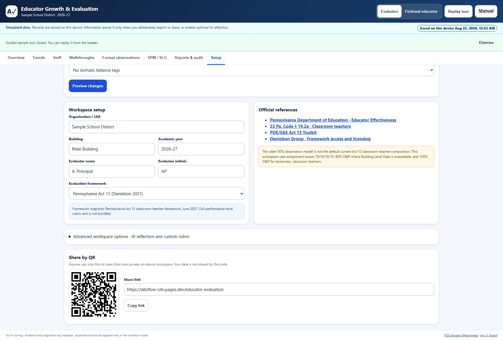
- On-device version: the code points to the published workspace page, so a colleague who scans it gets their own private workspace. Your records are not in the code and are not shared by it.
- District portal: the code points to your district's portal address. Each person's district sign-in still decides what they can see, so the code is safe to print on a staff-meeting handout.
16. Sending an Evaluation to an Educator by Email
The QR card above shares the tool. This section is about sharing one educator's evaluation with that educator, and getting their written response back, without any district server.
On Reports & audit, select one educator and choose Educator packet (send to educator). The packet boundary is state-based: it includes published walkthroughs, released formal evidence and ratings, eligible SPM records, permitted shared comments, and the educator's own submitted words. Evaluator drafts, unpublished evidence, unsigned ratings, internal receipts, audit rows, and every other educator are excluded.
Preview the downloaded HTML before sending it. Limit profile names to codes changes known profile labels, but it does not rewrite narrative evidence or comments; free text may still identify educators, students, colleagues, or classes.
Email the HTML only through a district-approved channel. The educator can open it in a browser and read the released evaluation with no account. Its response form provides their statement, eligible reflections, and a separate acknowledgment for each eligible walkthrough or formal record. Acknowledgment means “received/read,” not agreement or a contractual signature. The form downloads a small JSON response that they return to the evaluator.
Use Import workspace or educator response, then choose the response JSON. File selection does not apply anything. Review the source packet id, educator, statement/reflection/acknowledgment counts, stale records, and ignored fields, then choose Apply this reviewed response.
What a returned file can and cannot change. Only the educator's own words are accepted: their statement, eligible reflections, record-specific acknowledgment intent, and permitted response comments. Ratings, evidence, evaluator notes, workflow state, and supplied timestamps are ignored even if the file was edited by hand. The app stamps the receipt time and reports every stale or dropped field. If a source record changed after packet issue, that response is identified rather than quietly overwriting current work.
The receipt is not a signature. Each checkbox records acknowledgment intent for that specific record. It does not replace the conference or signature process required by district policy.
17. Using Your District's Own Rubric
The tool ships with three scoring profiles (Pennsylvania Act 13, Portland ME PEPG, and Maine PEPG). In a private on-device workspace only, you can relabel and replace the components of the existing four-domain rating structure. This is a compatibility option for local planning, not support for an arbitrary data model and not a district-portal policy control.
As an evaluator, open Setup → Advanced workspace options → Custom rubric. Download current rubric gives you the active one as a JSON file to use as a starting point. Edit the domains, their components, weights, colours and rating-band labels, then use Load a custom rubric. Restore the built-in rubric puts it back.
The JSON must contain exactly four unique domain ids: d1, d2, d3, and d4. Each needs a label and a components array. A domain can contain at most 50 unique component codes. A weighted rubric must give every domain a positive weight and total exactly 100 percent; an unweighted rubric is normalized to four equal 25 percent display weights. Bands must use unique thresholds from 0 through 3. Invalid, duplicate, oversized, or partly valid input is rejected as a whole.
A valid custom rubric and its version tag are now preserved in local browser storage and workspace JSON exports, so reopening the same local workspace does not silently restore the built-in profile. Keep the exact JSON with your backup. The district portal intentionally ignores custom-rubric input until server validation, version custody, and licensing review are available.
Changing a rubric mid-cycle. The four stable domain ids keep ratings attached to their slots, while labels and components can change. A finalized overall score remains frozen. Detailed historical interpretation still depends on the exact rubric version, so export a backup before switching and retain every approved rubric JSON under district procedure.
18. Evidence Checks and the Optional AI Second Read
When you assign ratings, the tool compares them against the evidence you tagged and reports what it finds: a domain rated with no evidence tagged to it, a rating below proficient resting on a single piece, domains with no evidence at all, and how your total compares with what the plan expects. Portland's guidebook, for instance, looks for at least nine pieces across a cycle.
This is counting, not judgment. It runs on the device, needs no AI, and never leaves. Favourable ratings are not questioned for thin evidence, and unrated domains are left alone. The point is narrow and practical: a rating that rests on little documented evidence is the one most likely to be overturned, so it is worth seeing before the record is finalised rather than afterwards.
The optional AI second read. Off by default. A district that permits it can enable AI reflection under Setup → Advanced workspace options. An evaluator can then ask a model whether the evidence they wrote supports the ratings they assigned, and what other readings that same evidence allows, including ones favourable to the educator. The educator's About tab is read-only and does not expose these evaluator controls.
Three boundaries apply and they are deliberate. The model is asked about the documentation, never about the educator, and is explicitly instructed not to assign, suggest or imply a rating. Its answer is advisory: it is shown to the evaluator and is never written into the record, so nothing a model produces becomes part of a personnel file. And enabling it does send that educator's evidence notes and ratings to your configured AI provider, which is why it is opt-in, per workspace, and why the educator's name is not included in what is sent. If your district or contract does not permit AI in evaluation, leave it off and everything else works unchanged.
19. Sharing Through Your Own Drive (Optional)
This is the middle path: a validated one-educator packet is filed in one principal's district Drive and shared through one reviewed Drive permission. It has no roster, assignment model, shared live editing, or district-wide repository. Obtain approval for Apps Script, personnel records in Drive, retention, and account handoff first.
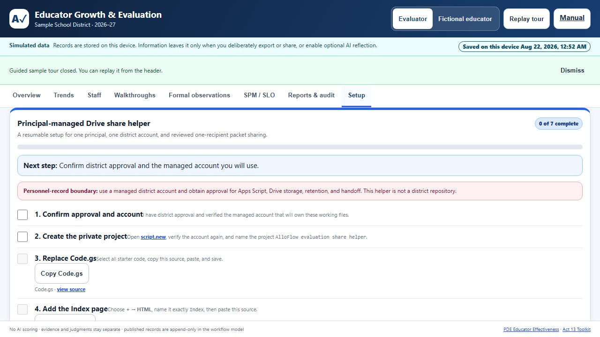
The same seven setup stages shown in the app
Open Setup, choose Principal-managed Drive, and follow the resumable checklist. A copy control marks a source stage only after it fetches the expected file signature and the clipboard succeeds.
- Confirm approval and account. Verify the intended district-managed Google account and district authorization.
- Create the private project. Open script.new, verify the account again, and name the project
AlloFlow evaluation share helper. - Replace Code.gs. Use Copy Code.gs or open the published source; select all starter code, paste, and save.
- Add the Index page. Choose + → HTML, name it exactly
Index, then use Copy Index.html or open its source. - Enable Drive API v3. In Project Settings, show
appsscript.json, then use its copy control or open the manifest source. - Deploy privately and save the link. Choose Deploy → New deployment → Web app, set Execute as: Me and Who has access: Only myself, review the account and scopes, then paste the URL ending in
/execinto Setup. Preview/devlinks are rejected. - Run the deployment check. Open that exact saved URL and select Run deployment check. It must show helper version 3, the expected managed email/domain, and Drive API v3. Changing the URL or copying updated source clears the recorded confirmation.
Share and revoke one packet
- In Evaluation Reports & audit, export and locally preview one Educator packet (.html).
- Open the private helper and run its deployment check before selecting a personnel file.
- Choose the HTML packet. The helper rejects arbitrary HTML and response packets, requires exactly one educator, and auto-fills educator/year metadata. A names-limited packet can still contain identifying free text.
- Enter and retype the educator's exact district email. The domain is locked to the verified account. Leave Viewer selected unless district procedure specifically needs Drive comments; those comments do not import into Evaluation. Choose an optional end date only after confirming tenant support.
- Confirm policy and choose Review; do not share yet. Inspect packet id and issue time, educator, folder, exact recipient, role, access end, and notification. Editing any field invalidates this snapshot.
- Choose Confirm and share this packet. A success message means Drive was re-read and the exact recipient, role, and expiration were proved. Google Drive is asked to email the recipient. Tell the educator to download the shared .html file and open it in a browser; Drive preview shows markup.
- Use Filed packets and live access status to re-read current permissions. Choose Revoke this live access for an active row. Success appears only after Drive proves every matching permission is absent. If an error names a recovery file, open that exact Drive link immediately and remove access manually.
Updates: replace all three source files, save, then choose Deploy → Manage deployments → Edit → New version. Reopen the same /exec link and run the check again. Editing source without creating a new version does not update the deployed helper.
Custody boundary. The AlloFlow Evaluations folder is a principal-owned working store, not automatic records management. Move or copy the year folder into the district's authorized system at the required handoff point, document that handoff, and transfer project/folder ownership before the principal account changes.
20. Glossary
- Walkthrough
- A short, frequent, low-stakes classroom visit that captures evidence. It does not score a rubric.
- Formal observation
- The full ten-step cycle with prework, conferences, evidence, reflection, ratings, acknowledgment, and finalization.
- Observation and Practice (O&P)
- The classroom-practice portion of a final evaluation, as distinct from data-based measures.
- SPM
- Student Performance Measure. A district-selected measure that contributes a defined share of the final evaluation.
- SLO
- Student Learning Objective. A goal set for a group of students, used where the framework calls for it.
- PEPG
- Performance Evaluation and Professional Growth, the Maine term for a district's educator evaluation system.
- Framework snapshot
- The tag stamped on every record identifying the framework and weights used when it was created, which is what keeps historical scores stable.
- Band
- The label a score falls into, such as Proficient. In this tool a band is triage for planning, not a verdict about a person.
- Released summary
- The final strengths-first document shared with the educator, opening with their own statement.
- Acknowledgment
- A record that the educator has seen a document. It does not signal agreement.
- Cohort suppression
- Withholding peer comparisons until enough peers contribute, so no individual can be identified from an aggregate.
21. Troubleshooting
- “Changes are not saved” or a save-failed banner: stop editing, choose Retry save, then Download emergency backup. Check browser storage/privacy settings and available space. Do not close until you have an authorized recovery copy.
- A damaged local workspace was detected: download the raw damaged value first. Retry storage or ask IT/data support to inspect that copy. Use the two-confirmation fresh-start action only after preserving it.
- An import did not apply when you chose a file: this is intentional. Read the staged organization/year/counts or response-field review, then explicitly confirm. A workspace replacement downloads a checkpoint first.
- Download rehearsal backup and start clean is disabled: read the transition review and check the empty-workspace acknowledgment. If the browser blocks the download, allow the authorized download before proceeding; do not manually copy fictional records into real work.
- A response shows stale or ignored fields: compare the packet issue/source time with the current record. Stale responses are identified; evaluator-controlled fields and file-supplied timestamps are dropped. Do not edit the response JSON to force a workflow transition.
- You need to undo an import: use Undo import before making another edit. The prior workspace is intentionally discarded from undo history after the next mutation; the automatic checkpoint remains as a downloaded file.
- Simulation Studio ignored part of a sentence: only the clauses listed as recognized were applied. Reword the ignored clause or set that parameter manually. Inspect normalization corrections and Preview before Apply.
- A simulated value changed by itself: the preview enforces 1 to 60 educators, 1 to 8 buildings, 0 to 8 walkthroughs per educator, finalized no greater than staff, and overdue no greater than non-finalized staff. The correction list shows requested and applied values.
- A custom rubric is rejected: return to Setup → Advanced workspace options, validate required unique domain ids/labels and weights, and test it in a fictional workspace before using it for a real cycle.
- AI reflection is unavailable or fails: the evaluation record is unchanged. Confirm that the feature is enabled, an approved provider is configured, and district policy permits transmission. Never paste personnel data into an unapproved provider as a workaround.
- A principal-helper source will not copy: use the visible view source link. “Unexpected source received” means the fetched file lacked its expected signature; do not paste it. Clipboard denial means select/copy from the source page manually.
- The helper URL is rejected: save the deployed Apps Script URL ending in
/exec. A/devpreview, editor URL, or shortened link is not accepted. - The helper remains locked: its check requires both a visible managed deployer email and Advanced Drive API v3. Reopen Apps Script under the intended district account, confirm the manifest/service, create a new deployment version, and run the check again.
- The helper rejects the HTML file: export a fresh Educator packet (.html). Arbitrary HTML, response packets, damaged metadata, year/name mismatches, and multi-educator data are blocked.
- The helper says review is no longer current: any edit cancels the disclosure snapshot. Re-read every field and select Review; do not share yet again.
- A recipient/domain or expiration is refused: never bypass the verified domain. Confirm the address. Viewer/commenter expiration depends on the Workspace edition and must generally be within one year; use no expiration plus documented revoke when policy permits.
- Drive shows raw HTML: this is Drive preview behavior. The educator must download the `.html` file and open it locally in a browser.
- Revoke cannot be proved: open the exact packet link in Drive, remove every matching educator permission manually, then run Filed packets and live access status again. Escalate to the principal/helper owner; do not ask the educator to send personnel content for diagnosis.
- "This page must be opened from the district Apps Script web-app URL": the portal bundle was opened outside its deployment. Use the
/execlink from your district administrator. - "The secure workspace could not be opened": this is the portal refusing to show anything, which is the design rather than a fault. The line underneath names the reason: an account that is not a member, a repository that was never set up, or the page opened outside its Apps Script address. Access is granted by the district, so the fix is with the administrator who deployed the portal, not on the page.
- "This record changed in another session": stop editing and compare the listed overlapping fields. The page has already loaded the newest district version. Choose Use district version to discard the stale attempt, or, when offered, Reapply only my non-conflicting work. The latter starts a new version-checked save, keeps every overlapping field from the district copy, and never downloads personnel data.
- The portal looks out of date: the administrator should review and re-paste all four current package files:
Code.gs,Index.html,Portal.html, andappsscript.json. Then create a new deployment version. Apps Script serves the old version until that version is deployed. - Setup health shows a warning: follow its specific message. It checks the domain lock, repository files, workspace metadata, owner continuity, release/rollover recovery, membership, assignments, and audit-chain integrity. Do not treat a green row as a substitute for district acceptance testing.
- An operations-center review expired or became stale: do not retry the old confirmation. Reload the current directory or active workspace, recreate the request, and review the new server-produced impact. Reviews expire after ten minutes, become invalid after relevant repository changes, and are single-use.
- A member or assignment is refused: confirm the address uses the configured managed domain, the educator profile already exists, and the chosen evaluator is an active evaluator or administrator member. The bootstrap administrator cannot be deactivated or demoted, and the last active administrator cannot be removed.
- A schedule review finds zero educators: check the exact building spelling, whether missing dates was selected, and whether the relevant cycles are inactive or finalized. Finalized cycles are intentionally never changed by a bulk schedule.
- An export was created but nobody can open it: this is the safe default. The file remains private to the deployment owner in Authorized exports. District personnel must use the approved records-handoff process; do not make the whole repository folder public.
- An archive is marked Failed or a restore rehearsal is refused: stop. Do not edit the archive or attempt a live overwrite. Confirm that the selected file is in this repository's Annual archives folder, compare it with the recorded rollover audit, and escalate to district IT under the backup/recovery procedure.
- Deployment owner continuity needs attention: stop before annual rollover or account retirement. The portal detected that the effective deployment owner no longer matches the bootstrap administrator. It intentionally returns no other account identity. District IT should verify the Apps Script deployment, private repository folder, spreadsheet/file ownership, recovery accounts, and the approved successor; the portal cannot transfer ownership itself.
- Release recovery required: do not click release again. An administrator should run Setup health, inspect the exact file in the private Released evaluations folder, confirm the educator's live Drive permission and the portal pointer, and follow district retention/legal-hold procedure. If automatic cleanup failed, remove access and trash only the uncommitted file after positively matching it to the recovery event.
- Annual rollover recovery required: do not start another rollover. In Setup, choose Recheck interrupted rollover. A result of completed means the server proved the reviewed new-year commit; reload and run Setup health. A result of archive only means it proved the old revision/year was unchanged; keep the archive and begin a fresh review only after checking it. A manual-recovery message means the state is ambiguous or the recorded archive failed verification; district IT must inspect the exact files and pending journal. Never delete archives or released documents to silence the warning.
- A finalized record needs a correction: finalized records are immutable by design. Add an appended comment, record a new entry, or have the educator attach a statement.
- Scores differ between old and new records: that is the framework snapshot working as intended (section 7). Each record keeps the framework and weights it was scored under.
- Peer context is missing on the Trends tab: fewer than ten eligible peers contributed, so the comparison is suppressed to protect identities.
- The QR code shows a different address than you expected: outside a web address, such as inside the desktop app, the card falls back to the published page on purpose, because a local file path cannot be opened by anyone else.
- Your workspace looks empty on another device or browser: the on-device workspace does not follow you, and clearing browser data erases it. See section 12 for exports and transfers.